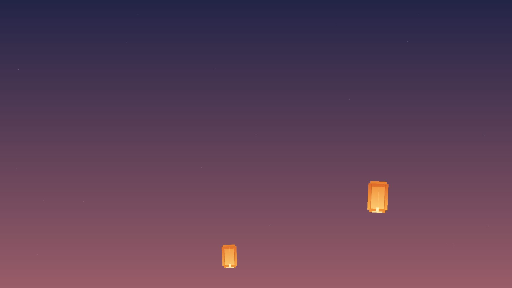
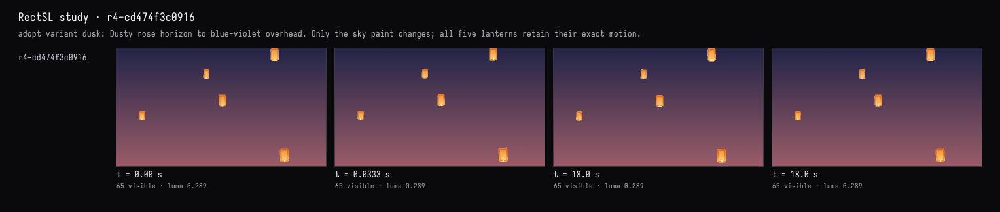
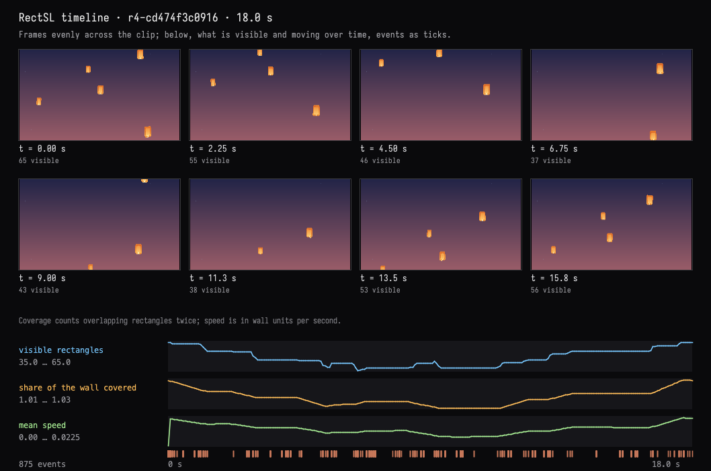
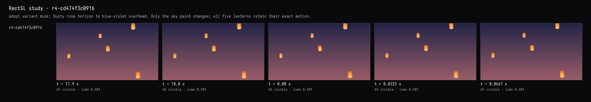

A seamless loop, shown
The recorded exchange: the request, the tool activity, every image the tools returned to the model, and its reply. Expand tool activity to read the steps; open an image to see it full size.
- Adopted variant dusk in the study card →
r4-cd474f3c0916“adopt variant dusk: Dusty rose horizon to blue-violet overhead. Only the sky paint changes; all five lanterns retain their exact motion.”
Make it loop seamlessly: no lantern should pop in or out when the clip wraps around. Show me it doesn't.
Tool activity · 14 steps
Starting AI conversation
RectSLStudyGuide finished (13 ms)
InspectRectSLStudy finished (6 ms)
CaptureRenderWindowRequest finished (685 ms)
ObserveRectSLStudy finished (794 ms)
Waiting for model
Considering positions and clamps
Considering positions and clamps
I’m thinking about keeping things seamless without making unnecessary changes. I need to show proof of the exact positions and endpoints, ensuring they aren't clamped. Maybe I should observe if the tool has a clamp? I should use the source guide for loop-time ordering and the timeline effectively to clarify the details. It’s important to get this right!
Next tool:
RectSLStudyGuideRectSLStudyGuide finished (3 ms)
TimelineRectSLStudy finished (504 ms)
ObserveRectSLStudy finished (1750 ms)
Waiting for model
Finalizing video export
Finalizing video export
I think I don’t need any more tools for this. It seems clear, and I've already verified everything, so there's no need for edits. It should satisfy the user as is. However, it could be worthwhile to export it just in case, and show the actual video. I'll go ahead with that to ensure everything is ready and presented properly!
Next tool:
ExportRectSLStudyExportRectSLStudy finished (12 ms)
Completed




The current scene already loops seamlessly, so I preserved its motion rather than changing it unnecessarily.
The filmstrip above shows consecutive frames across the wrap: 17.933 → 17.967 → 0.000 → 0.033 → 0.067 seconds.
- All five lanterns remain visible, continuing upward without popping.
- Pixel change across the seam is 0.60%, matching ordinary neighboring frames (0.58–0.61%).
- Rise repeats every 18 seconds; gentle sway repeats every 6 seconds. Lantern resets happen offscreen.
I also started a two-loop, 36-second video export, so you can watch the seam at 18 seconds. When finished, it will appear at:
files/lanterns-seam-check-two-loops.mp4